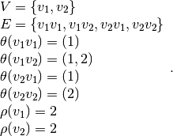

Running Example Summary Page¶
The running example is introduced step by step in Appendix A. This page is a summary that may be opened in a new window while reading Appendix A or Appendix B. The regulatory graph and state space of the running example are:

Formally, the regulatory graph consists of , where

Component  has 4 regulatory contexts and component
has 4 regulatory contexts and component  has 6:
has 6:
The state space partition by the contexts are:

The running example has 10 kinetic parameters: